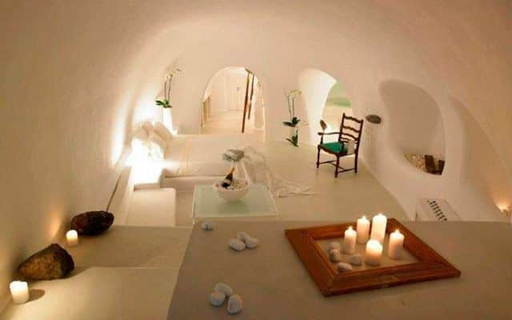
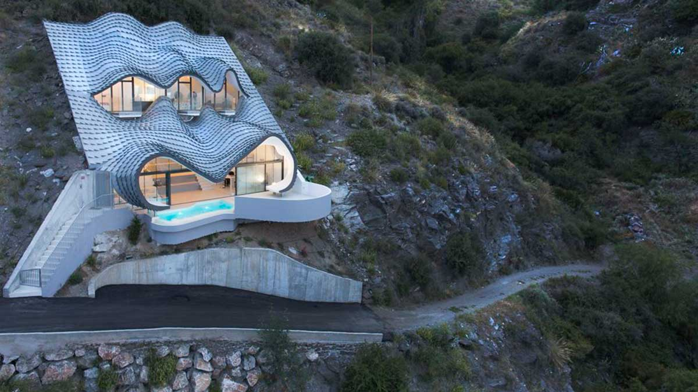
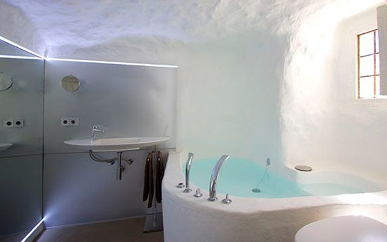
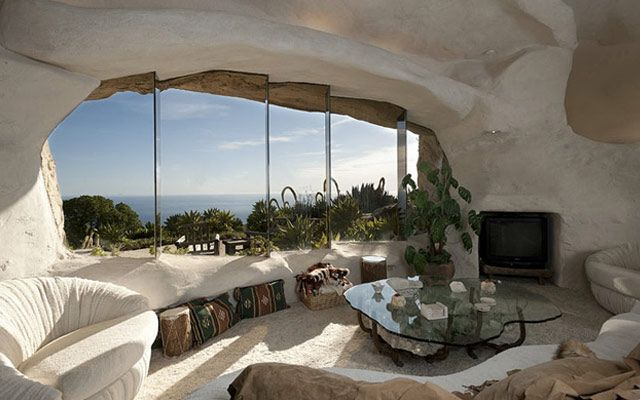
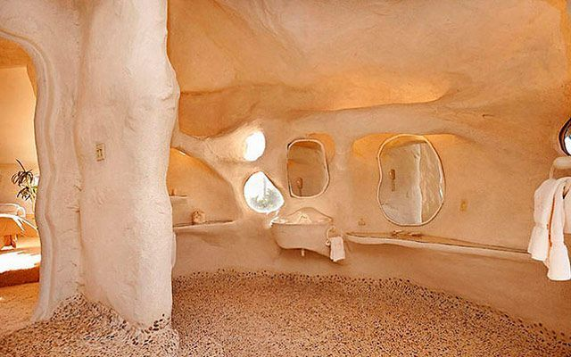
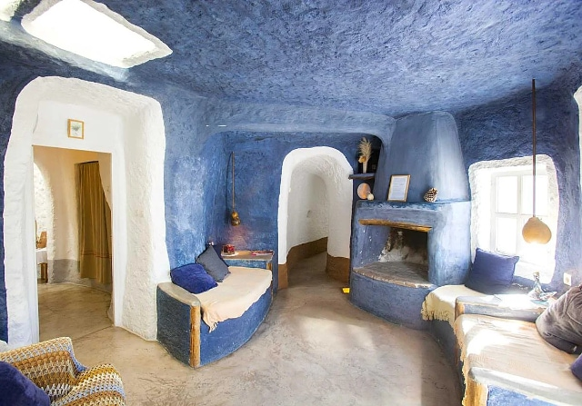

Wyobraź sobie, że na zewnątrz panują letnie upały powyżej 40 °C, ale w domu nie potrzebujesz klimatyzacji. Zimą z kolei nie ogrzewasz – a mimo to w środku jest przyjemne 18 do 20 stopni. To nie futurystyczny projekt ekologiczny, lecz liczący kilka stuleci sposób mieszkania, który do dziś sprawdza się w południowej Hiszpanii.
W andaluzyjskiej wsi Zújar w prowincji Granada ludzie wciąż mieszkają w tzw. casas cueva – domach jaskiniowych wykutych w skale. I co zaskakujące, nie jest to tylko atrakcja turystyczna. Dla wielu mieszkańców domy te są zwyczajnym, wygodnym i bardzo tanim sposobem na życie.
Mieszkania jaskiniowe mają w Andaluzji długą tradycję. Najwięcej jest ich w okolicach miast Guadix, Baza czy właśnie Zújar. Dzięki specyficznej budowie gleby i miękkiej skale można było łatwo wydrążyć domy bezpośrednio we wzgórzach.
Na pierwszy rzut oka często wyglądają niepozornie – z zewnątrz widać tylko białą fasadę z drzwiami i kominem. Prawdziwa przestrzeń kryje się jednak we wnętrzu góry. To właśnie skała jest tajemnicą ich wyjątkowej energooszczędności.

Naturalna klimatyzacja za darmo
Domy jaskiniowe działają jak doskonały naturalny izolator. Ziemia wokół domu utrzymuje stabilną temperaturę przez cały rok – zwykle między 18 a 20 °C.
Latem w środku panuje przyjemny chłód, podczas gdy na zewnątrz pali żar. Zimą z kolei temperatura nie spada tak drastycznie jak w zwykłych domach.
Efekt? Niemal zerowe koszty klimatyzacji, minimalne zapotrzebowanie na ogrzewanie, niskie rachunki za energię i bardzo przyjemny mikroklimat. W czasach drogiej energii coś tak prostego wydaje się aż niewiarygodnie nowoczesne.

Jaskinia z Wi-Fi i nowoczesną kuchnią
Choć to tradycyjny sposób mieszkania, dzisiejsze casas cueva zdecydowanie nie przypominają prehistorycznych jaskiń.
Wiele domów jest całkowicie wyremontowanych i ma nowoczesne łazienki, wyposażone kuchnie, internet, kominki, tarasy z widokiem na góry, a często także basen.
W środku panuje zaskakująca cisza. Grube ściany tłumią hałas z zewnątrz i wiele osób opisuje mieszkanie w jaskini jako wyjątkowo spokojne i przytulne.


Ile kosztuje życie w jaskini?
I tu przychodzi SZOK.
W okolicy Zújar wciąż można znaleźć nadające się do zamieszkania domy jaskiniowe za około 20 000 €. Mniejsze wyremontowane domy najczęściej kosztują między 25 a 40 tysięcy euro, w zależności od wielkości i stanu. Bardziej luksusowe obiekty turystyczne są oczywiście droższe.
Ceny są jednak wciąż nieporównywalnie niższe niż w większości Europy. To jeden z powodów, dla których tą okolicą zaczynają interesować się obcokrajowcy szukający tańszego i spokojniejszego życia w Hiszpanii.

Czy da się tam pracować?
Zújar to mała miejscowość licząca kilka tysięcy mieszkańców, więc możliwości pracy nie są tak szerokie jak w dużych miastach. Mimo to istnieje kilka kierunków:
Turystyka
To właśnie domy jaskiniowe przyciągają coraz więcej turystów. Ludzie pracują tu w małych pensjonatach i kwaterach, w restauracjach, jako zarządcy obiektów turystycznych lub wynajmują własne casas cueva przez Airbnb.
Praca zdalna
Dla cyfrowych nomadów okolica może być bardzo interesująca. Oferuje niskie koszty życia, spokój, słoneczną pogodę i stabilny internet w wielu domach.
Rolnictwo i lokalne usługi
Okolica to teren rolniczy. Uprawia się oliwki, migdały czy zboże. Część mieszkańców pracuje w rolnictwie, budownictwie lub usługach.
Uzdrowiska i turystyka przyrodnicza
Niedaleko znajdują się termy Baños de Zújar oraz ogromny zbiornik wodny Embalse del Negratín, który przyciąga odwiedzających ze względu na kąpiele, kajaki czy turystykę pieszą.

Romantyka… ale nie dla każdego
Życie w jaskini brzmi romantycznie – i dla wielu osób naprawdę takie jest. Spokój, minimum stresu, wolne tempo życia i niemal zerowe rachunki za energię mają ogromny urok.
Z drugiej strony trzeba liczyć się też z rzeczywistością: okolica jest dość odległa, bez samochodu praktycznie się nie obejdzie, oferta pracy jest ograniczona i nie każdy przyzwyczai się do życia w małej andaluzyjskiej społeczności.
Mimo to liczba osób szukających alternatywy dla drogiego i hektycznego życia w miastach rośnie.
Zújar leży w prowincji Granada w Andaluzji, w pobliżu gór Sierra de Baza i jeziora Negratín. Okolica znana jest z dużej liczby tradycyjnych mieszkań jaskiniowych oraz bardzo gorącego klimatu latem.